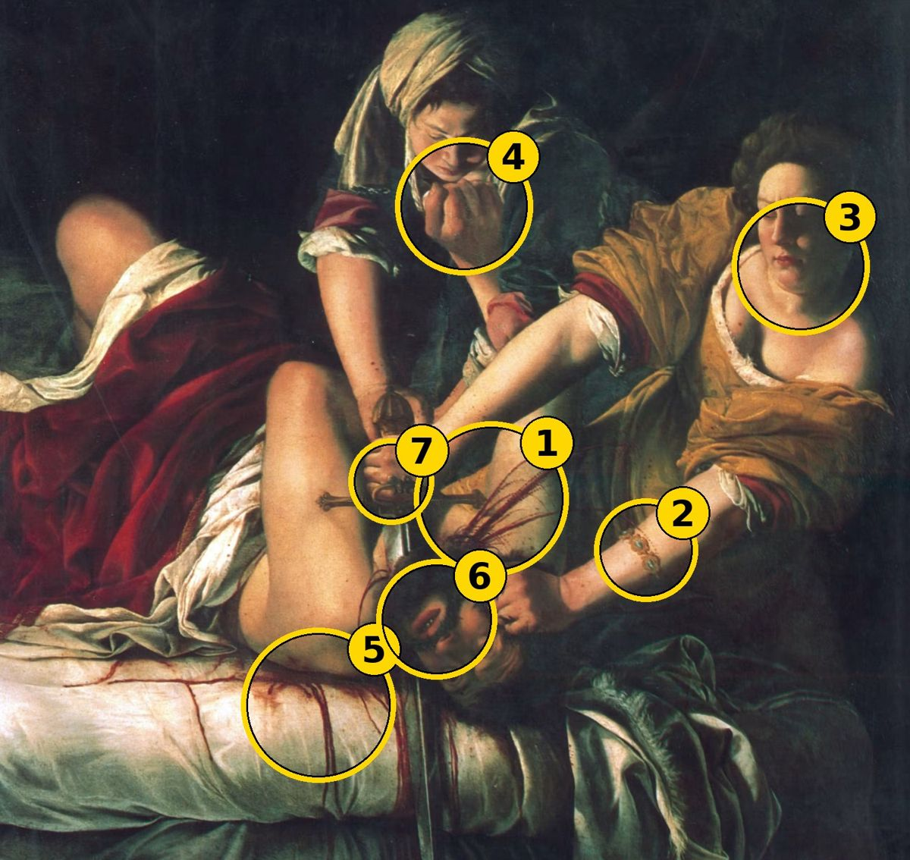

Hidden in the Frame · Uffizi Gallery, Florence
Judith Slaying Holofernes
Artemisia Gentileschi · c. 1620 · Oil on canvas · Room 90+

The story
In the Old Testament, the general Holofernes besieges a Jewish city. The widow Judith goes with her maid into his camp, gets him drunk and cuts off his head. Many men painted this scene, mostly elegant and distant. Artemisia paints it differently: as hard, physical work. As a young woman she was raped by her teacher; at the trial it was not he but she who was tortured with thumbscrews to “test” her testimony. Many see this painting as her answer.
Details to look for
- The blood sprays in arcs, as it physically would. Artemisia was a friend of Galileo – he even helped her when the Grand Duke would not pay for the painting.
- On Judith's arm is a bracelet with images of the goddess Artemis, the huntress – an allusion to the painter's own name. Artemisia signs the picture, so to speak, on the heroine's arm.
- Judith shows neither fear nor triumph, only concentration. She keeps her distance, arms outstretched, as if doing heavy work. No hesitation.
- The maid here is young and strong and presses Holofernes down with all her weight. In other painters' versions she just stands by. Here two women work together.
- The blood soaks the white sheet in streams. The bed where he meant to abuse Judith becomes his battlefield.
- Holofernes is wide awake, eyes open, fighting back with his fist. He is no sleeping victim – he fights and loses.
- The sword hilt forms a cross: the act appears as a judgement of God.
What it says
A woman acts instead of being a victim. The painting was considered so gruesome that it long hung in a dark corner. Today it is one of the strongest paintings in the entire museum.
Open the full guide – zoom, audio guide, German & Japanese →